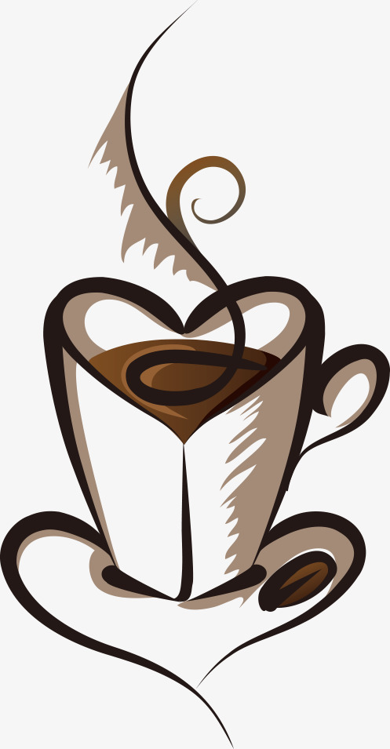
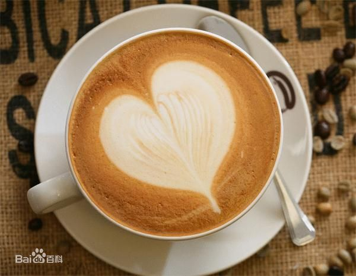

想来杯卡布奇诺吗?
拿铁
卡布奇诺
澳瑞白
美式咖啡
焦糖玛奇朵

拿铁
“拿铁”不是咖啡。其实，拿铁（Latte）在意大利语里是“牛奶”的意思，
如果你点一杯“拿铁”，那么服务生只会给你上一杯牛奶。而意大利语的
Caffè Latte指的才是拿铁。 现在很多冷饮店都会推出自己的“拿铁”
系列，像“红茶拿铁”“抹茶拿铁”等等，其实就是奶茶而并没有咖啡的成分。
拿铁咖啡是意大利浓缩咖啡（Espresso）与牛奶的经典混合，意大利人也
很喜欢把拿铁作为早餐的饮料。 意大利人早晨的厨房里，照得到阳光的炉子
上通常会同时煮着咖啡和牛奶。
版权所有@我是你爸爸